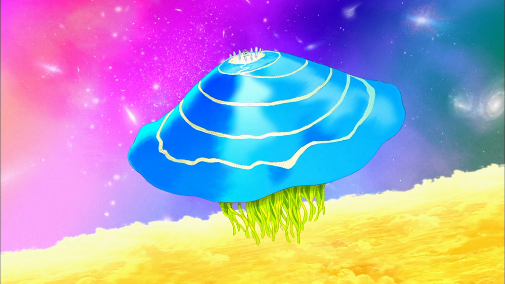
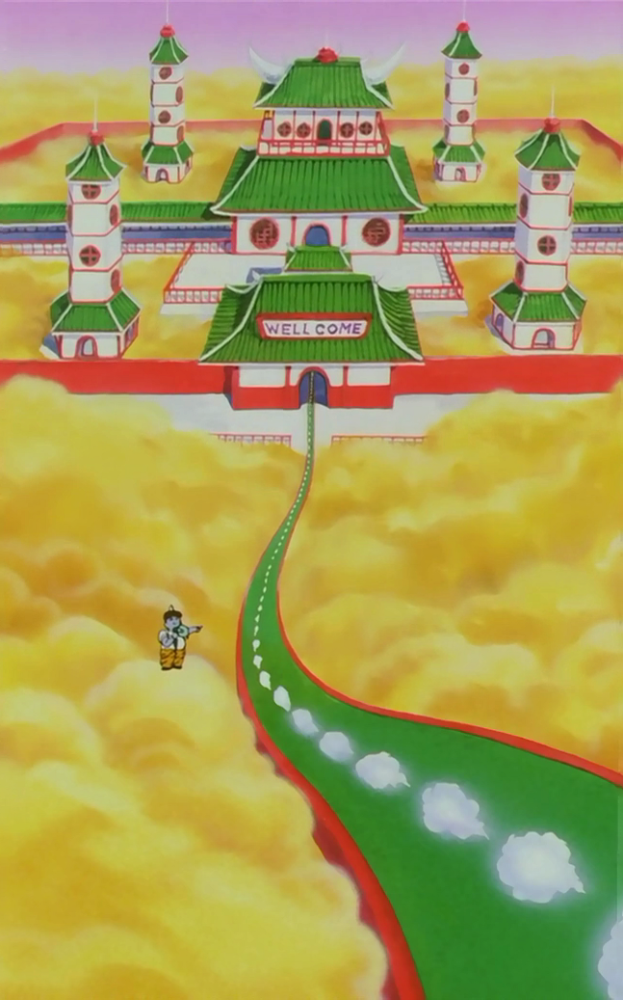

Dragonball Location
Location in dragonball
1. Zeno's Palace (全王ぜんおうさまの宮殿きゅうでん Zen-ō-sama no Kyūden) exact location is unknown but it resides above a huge jellyfish that is located in between golden clouds and what appears to be outer space. It is also a separate location from the universes and very far away from them, with even the Angels, as stated by Whis, taking two whole days at full speed to do a one-way trip and four entire days for a single roundtrip, and being more reachable through teleportation, such as the Kai Kai used by the Supreme Kais.

2. Check-In Station (閻えん魔ま界かい Enma Kai, lit. "Emma Realm") is a gateway between the physical plane
of existence and the Other World. It serves as both King Yemma's palace and his office, where he
passes judgement over Earth's dead souls, sending the good ones to Heaven and the bad ones to Hell.
It has been implied in Dragon Ball Super by King Yemma that other Check-In Stations exist in the
Other World.
3. Planet Vegeta (惑星ベジータ Wakusei Bejīta), formerly known as Planet Plant (惑星プラント Wakusei Puranto),
is the home planet of Goku, Vegeta, and all other native Saiyans, Tuffles and the Inhabitants of
Plant in the Dragon Ball franchise.